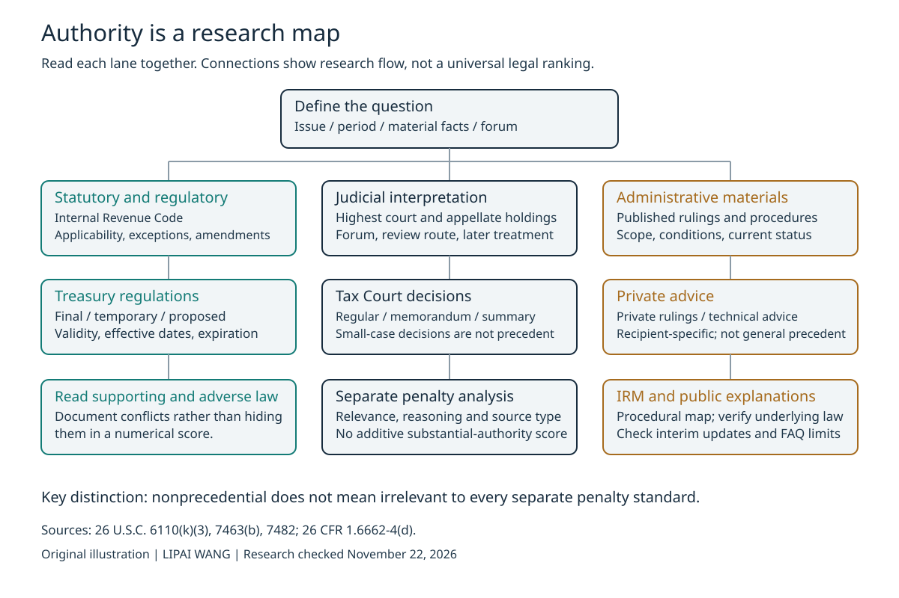
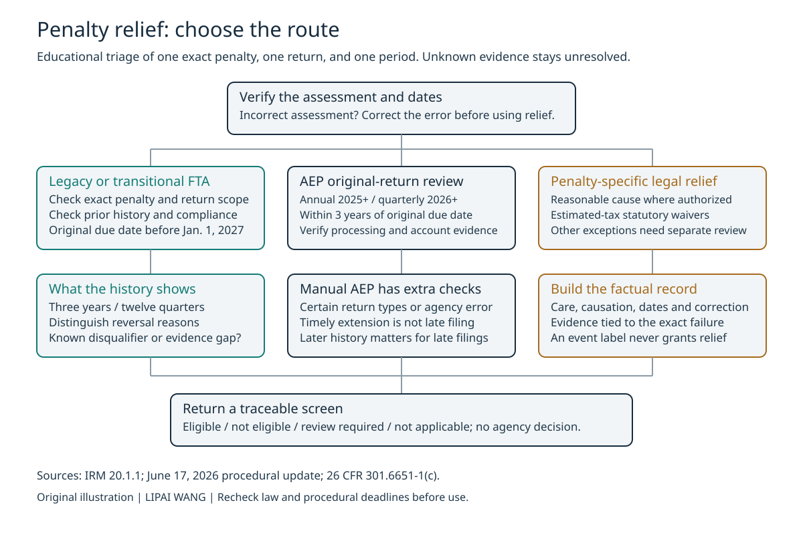

?tax_research=off).
Remove ?tax_research=off from the URL to restore the interactive verifier. Return to EA Procedure Atlas →
1. Authority Hierarchy & 26 CFR 1.6662-4 Screen (17 Categories)
2. 2026 AEP vs. Jan 1, 2027 FTA Penalty Relief Screener


3. Verified Primary IRS, IRC & CFR Sources (37 Citations)
4. 17-Row IRM Penalty Matrix & Canonical Study Cards
| Gate | Scope | Decision Boundary | IRM / CFR Pinpoint |
|---|